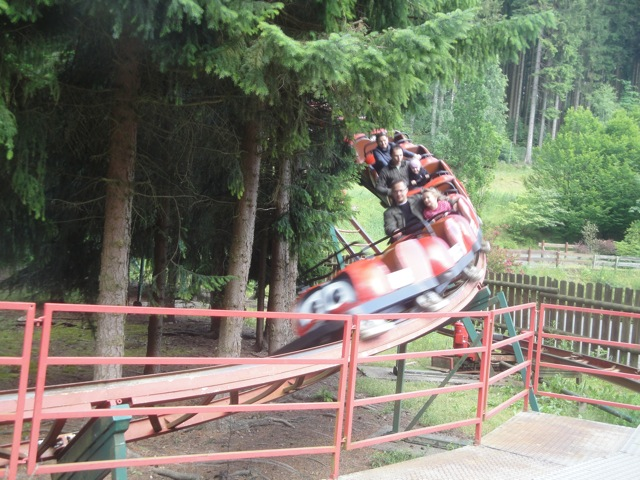
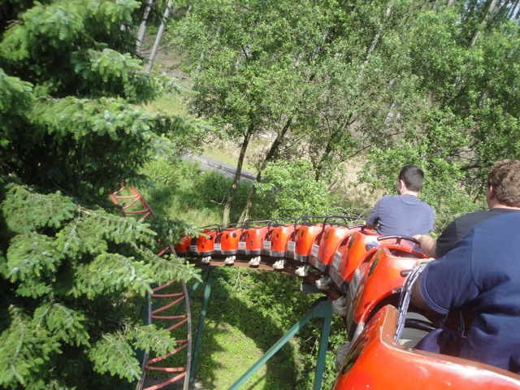
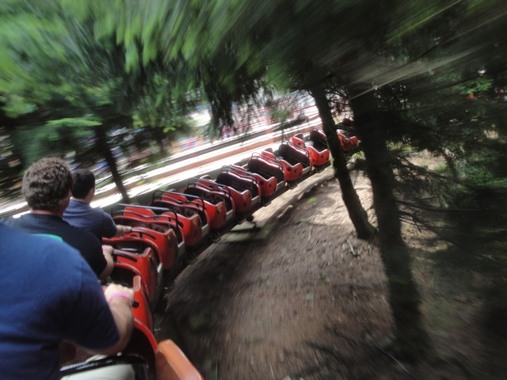
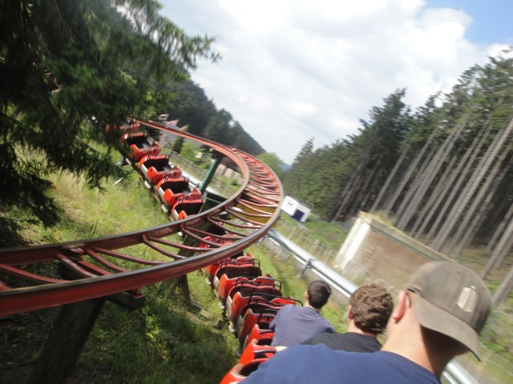
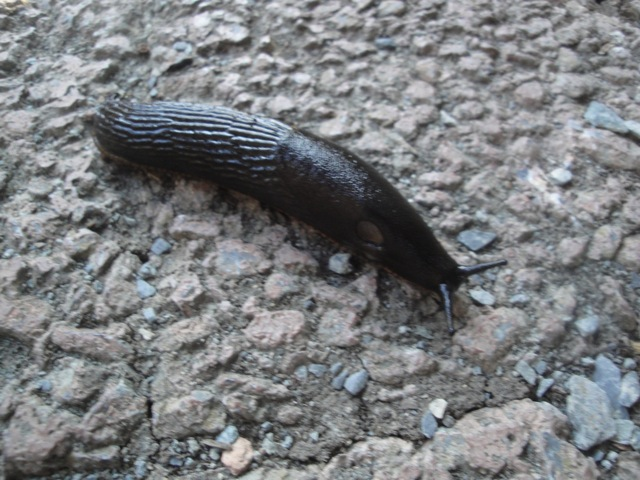

TPR's Mega Europe Trip
Rome Rome Credit Whoring Rainbow Magicland Fiabilandia Mirabilandia
Movieland Studios Gardaland Walygator ParcHoliday Park
Europa Park
Fort Fun
Heide Park
Schlossbeck Movie Park Germany Phantasialand
Parc Asterix Disneyland Paris
After our Lights on Euro Sat ERT this morning, we had a very long bus drive. And yeah, I'm having a very healthy lunch of PrinGOALS!!!!!!!!
Ooh. Driving through a cute little German town.
It kind of reminds me of Solvang.
Are we really going to a theme park today?
 Yeah. Todays park is this screwed up little park called Fort Fun.
Yeah. Todays park is this screwed up little park called Fort Fun.
All right. First up, lets get our Vekoma Roller Skater credit while we're here.
Whoops. It appears we entered the Fun House by mistake.
Nope. Turns out that Devils Mine has the COOLEST LINE EVER!!!! Yes, that includes Dueling Dragons line. This is better. =)
Dude, that line was better than an actual roller skater.
 WHOA!!! Look at the custom layout!!!!
WHOA!!! Look at the custom layout!!!!
In the back seat, theres actually some ejector air on this Roller Skater. =)
 After the insane first drop, its mostly just helixes.
After the insane first drop, its mostly just helixes.
 Still by far the best Vekoma Roller Skater I've ridden.
Still by far the best Vekoma Roller Skater I've ridden.
 All right. Lets go check out their fun house.
All right. Lets go check out their fun house.
Is there a roller skater at the end of this fun house as well?
Going crazy in the Crazy Washhouse!!!!
All right. Lets see just how scary their horror house is.
This isn't that scary. Tell you what, I want you to call my friend Antonio and ask him if he can help fix up this ride.
I have no idea what this is. Lets find out and see if its cool.
DUDE!!!! IT'S AN INDOOR ROUND UP!!! THATS SO BADASS!!!!!
These things were designed for people of my size. =)
Ooh!!! More insane Slides of Death!!!! Must check out!!!!
No, we are not being immature right now. These were designed for us.
"Tell my mom that I love her."
Yep, this slide was super fast and I flew off at the bottom.
Hey, anyone in the mood to get wet?
It was a really good log flume. The first drop was underground so there was an entire underground section, and it was just fun.
Dude!!! A park that has Magnum!!! Awesome!!!! It ran a good program and is themed to Native Americans!!!
Hmm, do I want to take the stairs down or slide on down to the lower level? Gee, such a hard decision. =)
Hey Patrick!!! Its your favorite ride!!!! =D

Ok, lets just get the Tivoli credit out of the way since its the only coaster not on our ERT schedule.
 Hey, just be glad that this is the smallest coaster in the park.
Hey, just be glad that this is the smallest coaster in the park.

You know these Tivoli coasters are just a ton of fun.

THROUGH THE TREES!!!!!!

Watch your head.
The operator was awesome, sending us around over and over and always giving us high fives.
 All right. This is the last coaster we need here.
All right. This is the last coaster we need here.
 Ugh. Its a Vekoma Corkscrew.
Ugh. Its a Vekoma Corkscrew.
 You know I've never ridden the Whirlwind model before and I've loved everything in the park so far. Maybe this'll be a fun ride.
You know I've never ridden the Whirlwind model before and I've loved everything in the park so far. Maybe this'll be a fun ride.
 HOLY CRAP!!! THIS RIDE IS HORRIBLE AND ROUGH AS HELL!!!!!
HOLY CRAP!!! THIS RIDE IS HORRIBLE AND ROUGH AS HELL!!!!!
You're gonna need some rope to get up to the top of the hill.
Our ERT has begun, and first up, we'll be hitting up the parks Zipline. Wild Eagle.
Lets get suited up for this thing.
This thing is PRETTY high up. Better not have a fear of heights.
While its not really scary, its very fast and very fun, giving you a great view of these German Mountains.
And now, we get to the parks star attraction. The Alpine Coaster.
I'd never been on an Alpine Coaster, so this was a really exciting treat for me, especially after hearing that it is one of the better ones.
"THIS IS F*CKING AWESOME!!!!!!"
 Hope you like lifthills, cause this ones 3.5 minutes long.
Hope you like lifthills, cause this ones 3.5 minutes long.
Its a long way down. Lets make this fun. =)
 Yeah. When you ride without any brakes, this thing is totally INSANE!!!!! (As seen by this blurry photo).
Yeah. When you ride without any brakes, this thing is totally INSANE!!!!! (As seen by this blurry photo).
I'm gonna stay here for the rest of ERT.
ERT may be over, but now we get our Group Meal.
You'd think that you wouldn't be able to top ERT on an insane brakeless Alpine Coaster, but nope. Fort Fun topped it with our meal. Now normally they just give you food, but not here. They let us cook our own food. Not only did they let us BBQ an unlimited amount of meat, but they also gave us unlimited beer and sodas. Yeah. It was insane.
 Yes, I'd really like the juice from my cock on my meat please.
Yes, I'd really like the juice from my cock on my meat please.
Hey David & Brittney!!! Don't you wish you were here with us enjoying all this meat!!? (Hey, with all this free beer, David would get so drunk so quickly we could just lie and tell him that its veggie meat and he'd believe us!!!)
This may very well rank as one of the best meals I ever had. It was just so awesome.
Grr!!! Gimme more meat and beer!!!!
Ugh, all this happiness just makes me want to kill myself.
Would you like your meat well done or burnt to a crisp?
Uncooked Bratswurt or Dan's dick?
We have thrills, meat, women, and beer. The only thing missing from this Male Fantasy was violence. So we fixed that and hung Colin.

Is that part of the meat you're giving us Fort Fun?
After our amazing day at Fort Fun, we just had to get stuck behind the Ass-Man's truck.
Heide Park
Home